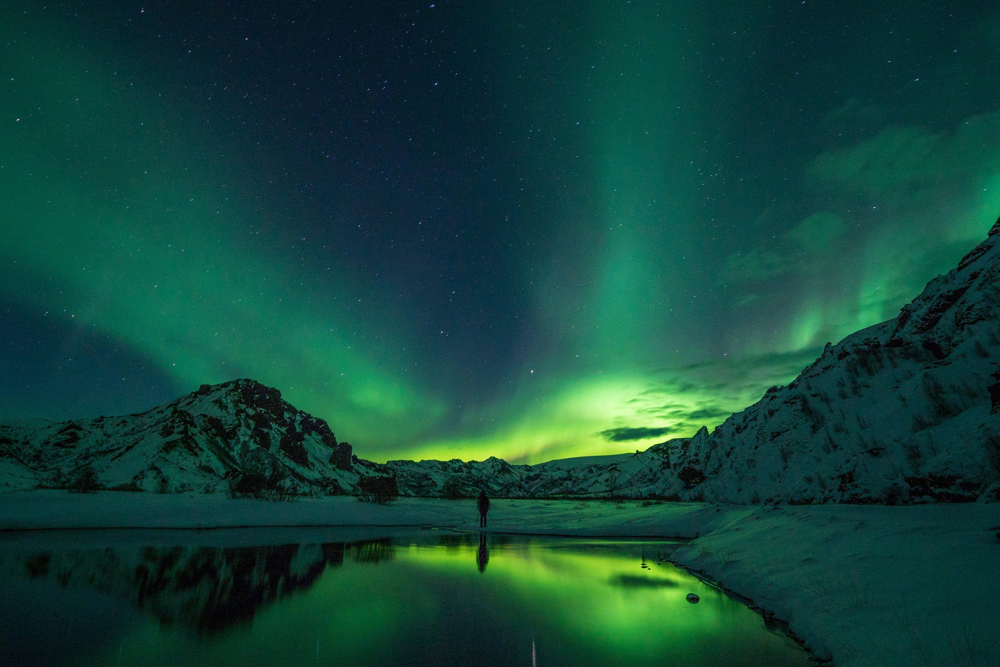
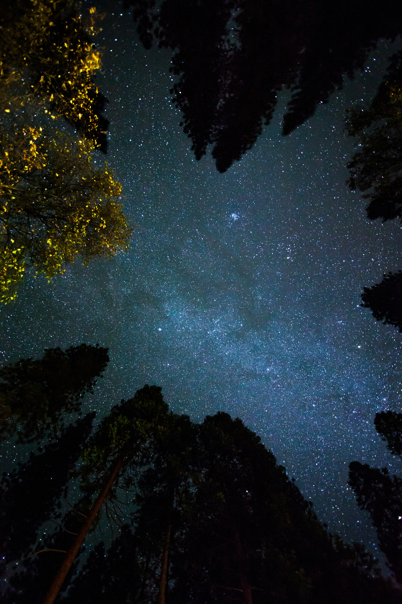

Selamat Datang di Website Portofolio
Website ini merupakan media pendukung untuk menampilkan hasil Ujian Praktik Terintegrasi. Konten utama pada website ini adalah video broadcasting pembelajaran yang berisi penyampaian teks argumentasi secara lisan.
Tentang Website Ini
Website ini merupakan website portofolio digital yang berisi hasil karya dan pembelajaran saya selama mengikuti Ujian Praktik Terintegrasi.
Tujuan Pembuatan Website
Tujuan pembuatan website ini adalah untuk menampilkan karya yang telah saya buat serta melatih kemampuan saya dalam membuat website sederhana menggunakan HTML.
Topik Argumentasi dan Alasan Pemilihan
Topik argumentasi saya adalah "Menghidupkan Imajinasi dengan Animasi" alasan saya adalah karena animasi adalah salah satu media penyalur seni visual yang mulai ditinggalkan, khususnya karena Artificial Intellegence yang mampu membuat animasi dalam satu ketukan dan hal tersebut juga berpengaruh kepada animasi konvensional yang dibuat oleh manusia.
Harapan dari Video
Harapan saya adalah untuk para penonton lebih memperhatikan dan mengapresiasikan para seniman dan animator manusia yang membuat seni dengan makna didalamnya, cerita dalam prosesnya, bukan cuma hasil tetapi sebuah jerih payah dan makna dibalik karyanya.
Refleksi, Kesan, dan Pesan
Alhamdulillah AlHaraki membantu saya bangkit lagi, dari saya yang bukan siapa-siapa menjadi orang yang lebih baik, oleh karena itu saya sangat berterimakasih kepada kalian, kalian juga telah membentuk karakterku yang baik dan untuk itu, kata-kata pun saya rasa tidak mampu memenuhi rasa terimakasih ini. pesan saya adalah terus maju dan terus jaya, hadapi dulu, hasilnya nanti aja, kamu akan meleset 99% peluang yang tidak kamu ambil.


